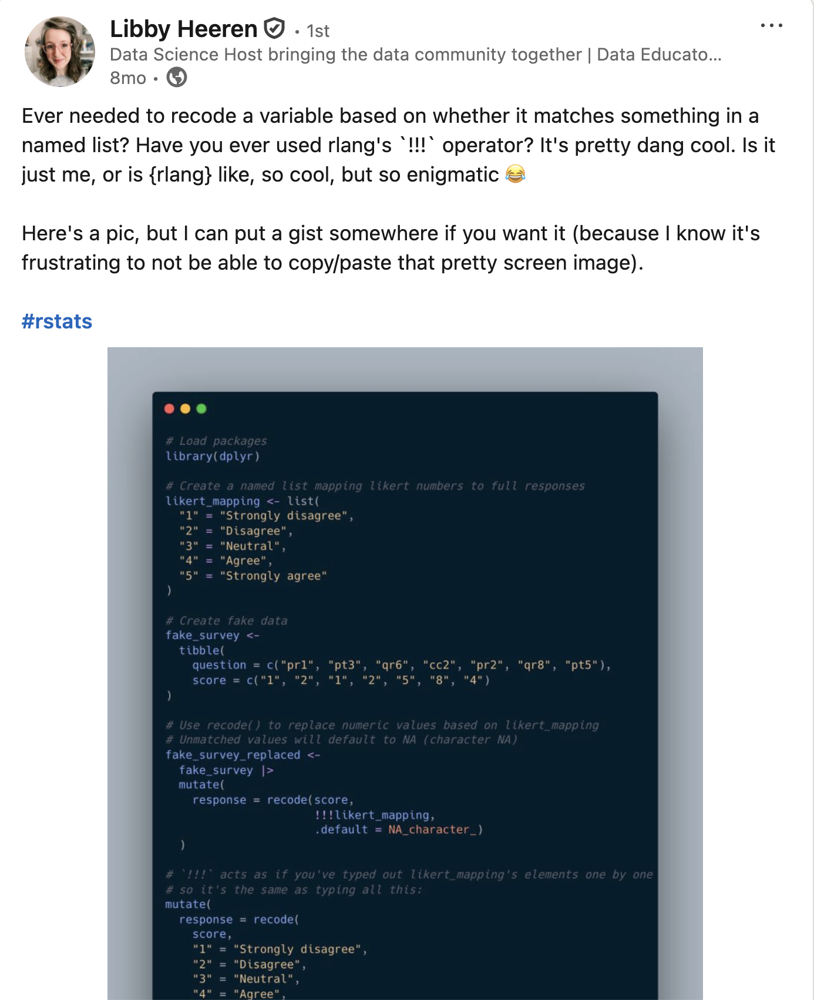
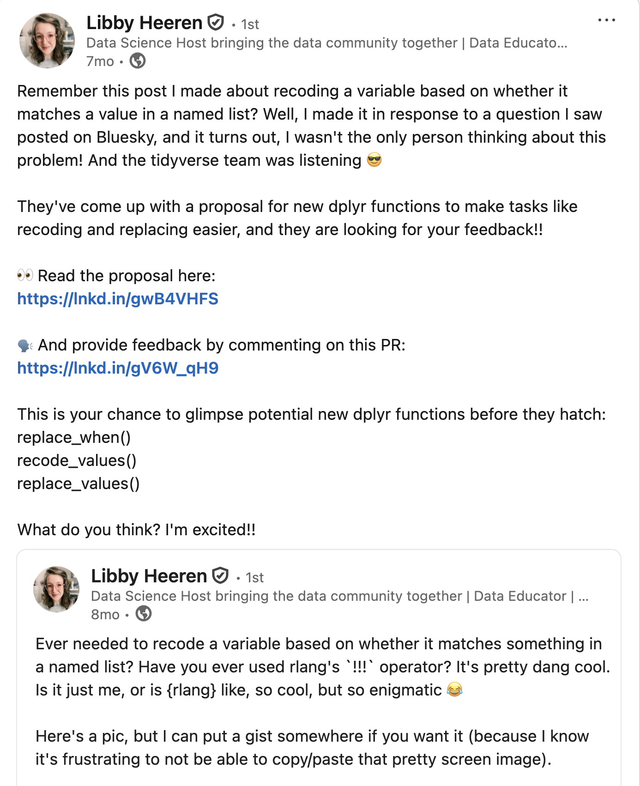

Working smarter with dplyr 1.2.0
R-Ladies Abuja | Isabella Velásquez
Introduction
Introduction
⬢ Slides available at: ivelasq.github.io/2026-06-24_dplyr-1-2-0
⬢ Links available at the end of the slide deck
dplyr
dplyr is a grammar of data manipulation, providing a consistent set of verbs that help you solve the most common data manipulation challenges
dplyr 1.2.0
dplyr functions
So many helpful functions!
⬢ distinct()
⬢ slice()
⬢ count()
⬢ pull()
⬢ relocate()
⬢ rename()
⬢ *_join()
⬢ …
But for now, let’s focus on:
⬢ filter()
⬢ mutate() + case_when()
Expanding the filter() family
Quick review of filter()
filter() picks cases based on their values
Image generated by tidy extensions
Quick review of filter()
filter() picks cases based on their values
Image generated by tidy extensions
The problems with using filter() to exclude
filter() is ambiguous!
Are you keeping (filtering in) Torgersen or dropping (filtering out) Torgersen?
filter() is optimized for keeping rows, but dropping rows can require complex logic
Example: Drop rows where island is Torgersen and body mass is greater than 4000g.
Using filter() with negation drops BOTH the target row AND rows with NA!
Image generated by tidy extensions
The problem with using filter() to exclude
To properly use filter(), we would need to do something like:
Work smarter with filter_out()!
Work smarter with filter_out()
filter_out() drops rows where ALL conditions match (keeps NAs!)
Image generated by tidy extensions
Demo
When to use filter() vs filter_out()
Use filter() to keep rows
✅ Positive logic
✅ What you want to keep
Rule of thumb: If you’re using ! in your filter(), consider filter_out() instead!
Issues with filter() and |
Confusing logic statements
Keep rows where Adelie penguins from Torgersen have body mass over 3700g OR where Gentoo penguins have body mass over 5000g.
Image generated by tidy extensions
Work smarter with when_any() and when_all()!
Work smarter with filter() + when_any() example
when_any() cleanly expresses OR logic - keeps rows matching at least one condition
Image generated by tidy extensions
Work smarter with filter() + when_any()
More powerful when you have complex combinations to keep
Image generated by tidy extensions
Work smarter with filter() + when_all()
when_all() cleanly expresses AND logic - keeps only rows matching ALL conditions
Image generated by tidy extensions
Layering when_any() + when_all()
The real power: nest when_all() inside when_any() for complex logic!
Image generated by tidy extensions
Demo
When to use when_any() vs when_all()
Use when_any() for OR logic
✅ At least one condition must be true
✅ Cleaner than nested | operators
Rule of thumb: If you have complex | or & expressions in your filter(), consider when_any() and when_all()!
Reaching recoding nirvana
Quick review of mutate()
mutate() adds new columns or modifies existing ones
Quick review of mutate() + case_when()
case_when() evaluates conditions in order and creates a new column
case_when() and unmatched rows
Unmatched rows default to NA
case_when() with .default
The .default parameter provides a value for unmatched rows
Issues with case_when()
case_when() wasn’t meant to recode values
case_when() evaluates multiple conditions to recode island names to locations
Work smarter with recode_values()!
Use recode_values() when recoding and matching with values
recode_values() matches exact values and recodes them to new values
Use recode_values() when recoding and matching with values
With unmatched = "error", operation stops on first unmatched value
Using recode_values() and a lookup table
The lookup table provides the mapping from old values to new values
Demo
When to use recode_values()
Use case_when() for conditions
✅ Complex logical conditions
✅ Comparing values with >, <, >=, etc.
Rule of thumb: If you’re using == in case_when(), consider recode_values() instead!
New replace_values() function
replace_values() replaces specific values (no need for .default)
New replace_when() function
replace_when() replaces values based on a condition (no .default needed!)
When to use replace_*()
Use case_when()/recode_values() to create a new column
✅ Building a new variable from scratch
✅ Multiple outcomes based on conditions
✅ Requires .default for unmatched cases
Rule of thumb: If you want to modify some values but keep the rest, use replace_*() instead of case_when()/recode_values() with .default!
Additional thoughts
case_match() has been soft deprecated

Updating your LLM
- Paste documentation into the conversation
- Add a CLAUDE.md or SKILL.md file to your project
- Point it to the docs
- Use an MCP server
Community feedback is sooo important
We are looking for #rstats community feedback on 3 new dplyr functions!
We're aiming to expand the
filter()family:Read more and leave feedback here: github.com/tidyverse/ti…
filter()to keep rowsfilter_out()to drop rowswhen_any()andwhen_all()as modifiers
[image or embed] — Davis Vaughan (@davisvaughan.bsky.social) November 7, 2025 at 10:03 AM
Community feedback is sooo important


Summary
Rules of thumb
⬢ Use filter() to keep rows
⬢ Use filter_out() to drop rows (if you’re using ! in filter())
⬢ Use when_any() for OR logic (if you have complex | expressions)
⬢ Use when_all() for AND logic (useful when nesting inside when_any())
⬢ Use recode_values() for exact matches (if you’re using == in case_when())
⬢ Use replace_*() to modify some existing columns
Installing dplyr 1.2.0
Upgrade today!
Thank you
Acknowledgements
- Davis Vaughan and the tidyverse team
- Libby Heeren for her awesome example
- Emojis from OpenMoji
- Photo from Unsplash
Links
ivelasq.github.io/2026-06-24_dplyr-1-2-0